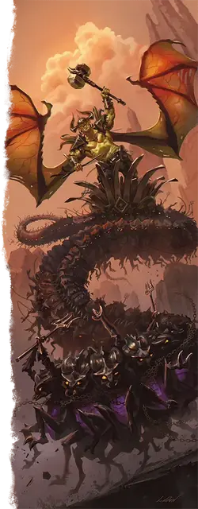

Малаксикс
Malaxxix
Огромное Исчадие (Юголот), нейтрально-злое, именной НИП

Класс Доспеха 17 (природный доспех)
Хиты 312 (25к12 + 150)
Скорость 40 футов, летая 60 футов
| мод | спас | ||
|---|---|---|---|
| СИЛ | 23 | +6 | +6 |
| ЛОВ | 16 | +3 | +3 |
| ТЕЛ | 22 | +6 | +6 |
| мод | спас | ||
|---|---|---|---|
| ИНТ | 22 | +6 | +6 |
| МДР | 20 | +5 | +5 |
| ХАР | 18 | +4 | +4 |
Навыки Атлетика +12, Восприятие +11, Магия +12
Сопротивление урону огонь, холод, электричество; дробящий, колющий, рубящий от немагических атак
Иммунитет к урону кислота, яд
Иммунитет к состояниям испуг, истощение, отравление, очарование
Чувства истинное зрение 120 футов, пассивное Восприятие 21
Языки Бездны, Инфернальный, Телепатия 120 фт.
Опасность 18 (20000 опыта)
Бонус мастерства +6
Особенности
Легендарное сопротивление (3/день). Если Малаксикс проваливает спасбросок, он может вместо этого сделать спасбросок успешным.
Сопротивление магии. Малаксикс совершает с преимуществом спасброски от заклинаний и прочих магических эффектов.
Проклятие Малаксикса. Существо, настроившееся на один из проклятых предметов Малаксикса (пример взрывные очки [blasted Goggles], вопящие поножи [shrieking Greaves]), подвергается проклятию Малаксикса. Проклятие позволяет Малаксиксу взаимодействовать с проклятым существом особым образом:
Наблюдение. Малаксикс может наложить заклинание наблюдение [scrying] на проклятое существо без материальных компонентов или ячейки заклинаний. Малаксиксу не обязательно находиться на том же плане существования, что и существо, чтобы использовать эту особенность, и существо автоматически проваливает спасбросок против заклинания.
Телепорт. Малаксикс может действием телепортироваться вместе с любым снаряжением, которое на нём надето, в незанятое пространство, находящееся в пределах 60 футов от проклятого существа, независимо от местоположения существа в мультивселенной.
Проклятие Малаксикса действует до тех пор, пока не будет отменено заклинанием снятие проклятия [remove curse], заклинанием высшее восстановление [greater restoration] или подобной магией.
Действия
Мультиатака. Малаксикс совершает две атаки Кузнечным молотом, Кнутом или их комбинацией.
Кузнечный молот. . Рукопашная атака оружием: +12 к попаданию, досягаемость 10 футов, одна цель. Попадание: 28 (4к10 + 6) дробящего урона и цель не может совершать реакции до конца следующего хода Малаксикса.
Кнут. . Рукопашная атака оружием: +12 к попаданию, досягаемость 30 футов, одна цель. Попадание: 15 (2к8 + 6) рубящего урона и цель становится опутанной на 1 минуту. Опутанная цель может совершить проверку Силы Сл 18, в конце каждого своего хода, в случае успеха оканчивая на себе эффект. Только одно существо может быть опутано кнутом единовременно.
Вихрь меззолотов (перезарядка 5-6). Малаксикс вызывает вихрь кружащихся мезолотов в точке, которую он может видеть на расстоянии 90 футов. Вихрь представляет собой цилиндр радиусом 30 футов и высотой 100 футов с центром в этой точке. Каждое существо, кроме Малаксикса, находящееся в этой области, должно совершить спасбросок Ловкости Сл 20. При провале существо получает 35 (10к6) урона силовым полем и становится опутанным, находясь внутри цилиндра. При успехе существо получает половину этого урона и перемещается в ближайшее незанятое пространство за пределами цилиндра. Вихрь существует до начала следующего хода Малаксикса.
Легендарные действия
Малаксикс может совершать 3 легендарных действия, выбирая из указанных ниже вариантов. Лишь одно легендарное действие может быть совершено за раз, и только в конце хода другого существа. Малаксикс восстанавливает истраченные действия в начале своего хода.
Шаг исчадия. Малаксикс перемещается на свою скорость. Это перемещение не провоцирует атак. Когда Малаксикс перемещается в пределах 5 футов от существа во время этого перемещения, это существо получает 5 (1к10) урона электричеством. Существо может получать данный урон только один раз за ход.
Атака (стоит 2 действия). Малаксикс совершает одну атаку Кузнечным молотом или Кнутом.
Логово
Слишком много ног. Слишком громко. У меня такое чувство, что мой разум плавится.
Паланкин нерожденного — монстроподобный многоногий транспорт — служащий как основным средством передвижения Малаксикса, так и его логовом.
Малаксис может использовать действия логова, находясь на паланкине. ПО Малаксикса увеличивается до 19 (22 000 опыта) если столкновение происходит на паланкине.
Паланкин нерожденного. Нерожденный паланкин - это червеобразное чудище из визжащих колёс, состоящий из сотен неутомимых меззолотов. Это уникальное транспортное средство и Громадный объект со следующей статистикой:
Класс доспеха. : 20
Хиты. : 250
Скорость. : 50 фт., копая 30 фт.
Иммунитет к урону. : ядом, психической энергией
Только Малаксикс может управлять этим транспортным средством. Если Малаксикс убит, паланкин рассыпатся за считанные секунды.
Действия логова
При значении инициативы «20» (проигрыш при ничье), Малаксикс может совершить действие в логове, чтобы создать один из следующих эффектов; он не может использовать один и тот же эффект два раунда подряд:
Пересборка. Малаксикс выбирает либо себя, либо паланкин. Цель получает 19 (3к12) временных хитов.
Удар. Малаксикс приказывает паланкину опуститься на землю. Каждое существо в пределах 15 футов от паланкина должно совершить спасбросок Силы Сл 20. При провале существо получает 11 (2к10) дробящего урона и цель падает ничком. При успехе существо получает только половину этого урона.
Ускорение. Малаксикс приказывает паланкину переместиться на его скорость.
Местные эффекты
Область вокруг нерожденного паланкина искажается из-за его присутствия, создавая следующие эффекты:
• Дискомфорт в черепе. Существа, которые проводят более 24 часов в пределах 1 мили от паланкина, слышат в своем сознании непрерывный царапающий звук.
• Скрежещущие шестерни. Конструкты в пределах 1 мили от паланкина замедляются. Скорость конструктов уменьшается вдвое, и они с помехой совершают спасброски Ловкости.
• Полчища насекомых. Насекомые и насекомоподобные Звери в пределах 1 мили от паланкина становятся дезориентированными и агрессивными, объединяясь в неестественные рои и нападая на любых существ, оказавшихся в поле зрения.
Если Малаксикс умирает или нерожденный паланкин уничтожается, эти эффекты мгновенно оканчиваются.
Описание
Малаксикс - могущественный и жестокий хищник, идеальный враг для смертельного столкновения с в любой точке мультивселенной. Лучший способ предсказать такое противостояние - выдать партии один или несколько проклятых предметов, изготовленных на заказ Малаксиксом, подвергая персонажей проклятию Малаксикс. Ниже приведены примеры проклятых предметов и правила для "проклятия Малаксикса".
Творения Малаксикса появляются в самые неожиданные моменты. Персонаж может найти такой в один из дней, после какого-нибудь большого несчастья, например, после того, как обидел могущественную ведьму или вытащил карту Огонь из колоды многих вещей [deck of many things]. Конечно, вы также можете поместить такой проклятый предмет в свое следующее подземелье или среди ничем не примечательных сокровищ.
Как только персонаж настраивается на один из проклятых предметов Малаксикса, на него распространяется проклятие юголота. Малаксикс может следить за любым существом, пораженным данным проклятием, и может телепортироваться к проклятому существу по своему желанию. Малаксикс обычно уделяет подобное внимание существам, которые, по его мнению, могут способствовать достижению его цели по поиску Книг учёта.
Может пройти некоторое время, прежде чем Малаксикс явится к партии. Скоррее всего, Малаксикс заранее, создаст дополнительные проклятые предметы, которые игроки смогут обнаружить в своих приключениях, а затем с восторгом наблюдать, как персонажи корчатся под тяжестью своего проклятого вооружения. Только после того, как Малаксиксу наскучат персонажи, он телепортируется к ним, пытаясь убить забавных смертных и вернуть сокровища.
Отыгрыш Малаксикса
Малаксикс - существо, обладающее огромной хитростью, свирепой яростью и ненасытной жаждой крови, считающий стоящей любую возможность причинить страдания другим. Когда Малаксикс соизволяет заговорить с другими, дьявол демонстрирует высокопарную дикцию и напыщенное поведение — разительный контраст с обычной яростью юголота.